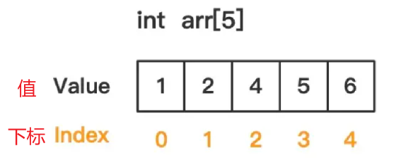

<!DOCTYPE lake>
<h1 data-lake-id="aIm2q" id="aIm2q"><span data-lake-id="u256db10b" id="u256db10b">什么是数组</span></h1><ul list="ucbd4ba17"><li data-lake-id="uc85b17ee" fid="ua65e5094" id="uc85b17ee"><span data-lake-id="u82787d68" id="u82787d68">数组是 C 语言中的一种数据结构，用于存储一组具有相同数据类型的数据。</span></li><li data-lake-id="u564a4944" fid="ua65e5094" id="u564a4944"><span data-lake-id="ue7252267" id="ue7252267">数组中的每个元素可以通过一个下标（索引）来访问，索引从 0 开始，最大值为数组长度减 1。</span></li></ul><p data-lake-id="u0808db3d" id="u0808db3d" style="text-indent: 2em"></p><p data-lake-id="u7fee3173" id="u7fee3173" style="text-indent: 2em"><br/></p><h1 data-lake-id="S2uRz" id="S2uRz"><span data-lake-id="u895c5d15" id="u895c5d15">数组</span></h1><h2 data-lake-id="vKUOs" id="vKUOs"><span data-lake-id="uc73263f2" id="uc73263f2">数组的使用</span></h2><p data-lake-id="u7760d215" id="u7760d215"><span data-lake-id="ua1dc457a" id="ua1dc457a">定义语法格式</span></p><span class="yuque-card-unsupported">[codeblock]</span><ul list="ua3367877"><li data-lake-id="u6e3f04fe" fid="u80c53d1c" id="u6e3f04fe"><span data-lake-id="u5c425fed" id="u5c425fed">数组名不能与其它变量名相同，同一作用域内是唯一的</span></li><li data-lake-id="ua29c0bf3" fid="u80c53d1c" id="ua29c0bf3"><span data-lake-id="ua1db9143" id="ua1db9143">其下标从0开始计算，因此5个元素分别为</span><code data-lake-id="u8be07ae2" id="u8be07ae2"><span data-lake-id="u9ea7e375" id="u9ea7e375">arr[0]</span></code><span data-lake-id="ub67401c4" id="ub67401c4">，</span><code data-lake-id="u5dd610c3" id="u5dd610c3"><span data-lake-id="u259d61db" id="u259d61db">arr[1]</span></code><span data-lake-id="ub736ef3e" id="ub736ef3e">，</span><code data-lake-id="uedc2259a" id="uedc2259a"><span data-lake-id="u5b6bdfd1" id="u5b6bdfd1">arr[2]</span></code><span data-lake-id="ue9a8bcef" id="ue9a8bcef">，</span><code data-lake-id="ufe0ccba1" id="ufe0ccba1"><span data-lake-id="ue364b5fc" id="ue364b5fc">arr[3]</span></code><span data-lake-id="u093c94b9" id="u093c94b9">，</span><code data-lake-id="u3305282e" id="u3305282e"><span data-lake-id="u6b810499" id="u6b810499">arr[4]</span></code></li></ul><p data-lake-id="u95137268" id="u95137268"><span data-lake-id="u37fefcc3" id="u37fefcc3">​</span><br/></p><span class="yuque-card-unsupported">[codeblock]</span><p data-lake-id="u05c19a7e" id="u05c19a7e"><br/></p><h2 data-lake-id="aZVMj" id="aZVMj"><span class="lake-fontsize-12" data-lake-id="u3512cc8a" id="u3512cc8a">数组的初始化</span></h2><ul list="ubd99ce15"><li data-lake-id="uf9063858" fid="u0a457d7f" id="uf9063858"><span class="lake-fontsize-12" data-lake-id="u173e5657" id="u173e5657" style="color: rgb(0,0,0)">在定义数组的同时进行赋值，称为初始化</span></li><li data-lake-id="uc3b0327f" fid="u0a457d7f" id="uc3b0327f"><span class="lake-fontsize-12" data-lake-id="u6f2668fc" id="u6f2668fc" style="color: rgb(0,0,0)">全局数组若不初始化，编译器将其初始化为零</span></li><li data-lake-id="u7c480d04" fid="u0a457d7f" id="u7c480d04"><span data-lake-id="ufeb8b491" id="ufeb8b491">局部数组若不初始化，内容为随机值</span></li></ul><span class="yuque-card-unsupported">[codeblock]</span><p data-lake-id="u66a33a6d" id="u66a33a6d"><br/></p><h2 data-lake-id="uY3hr" id="uY3hr"><span data-lake-id="uff2dd816" id="uff2dd816">数组名</span></h2><ul list="ub06e5eb5"><li data-lake-id="u2a6f7975" fid="ucf12bb2b" id="u2a6f7975"><span data-lake-id="ua2bda9f3" id="ua2bda9f3">数组名是一个地址的常量，</span><span data-comment-id="29902412" data-lake-id="u9574868b" id="u9574868b">代表数组中首元素的地址</span></li><li data-lake-id="ubd59faa7" fid="ucf12bb2b" id="ubd59faa7"><span data-lake-id="u34ff450b" id="u34ff450b">即 </span><code data-lake-id="ue57cc11c" id="ue57cc11c"><span data-lake-id="u19c234cb" id="u19c234cb">arr == &amp;arr[0]</span></code></li></ul><p data-lake-id="ub1a4e184" id="ub1a4e184"><span data-lake-id="u5fb7f977" id="u5fb7f977">​</span><br/></p><h2 data-lake-id="O3iKR" id="O3iKR"><span data-lake-id="u01374f80" id="u01374f80">数组长度</span></h2><span class="yuque-card-unsupported">[codeblock]</span><p data-lake-id="u4aec24ef" id="u4aec24ef"><br/></p>